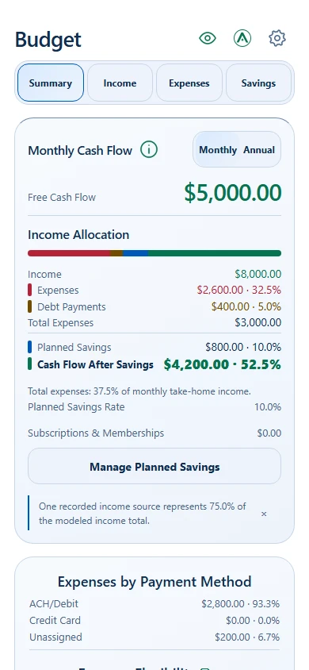
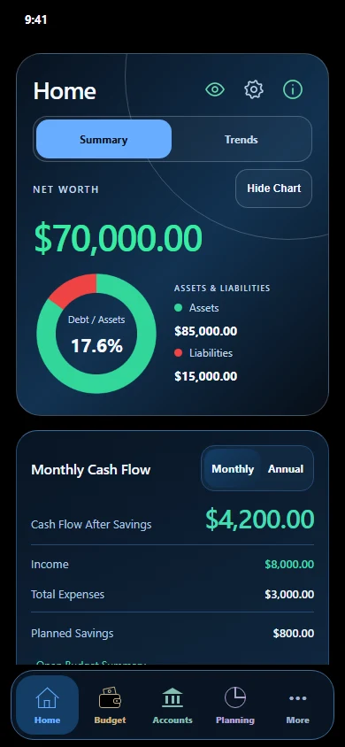
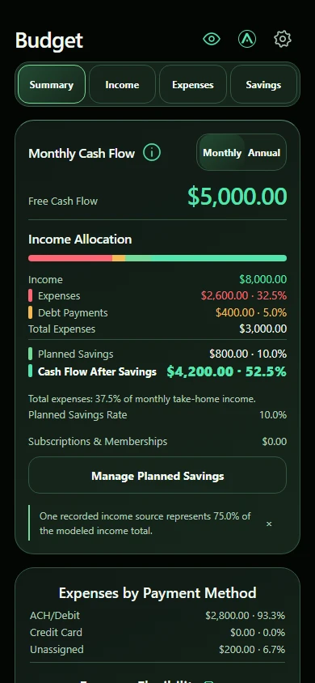

Organize Your Finances
Track assets, liabilities, income, and expenses. Review net worth, add historical balances, and see what is scheduled in Cash Flow Calendar.
Financial OverviewOrganize what you own, owe, earn, and spend. Plan for retirement, explore debt strategies, compare rental and business scenarios, and create reports you can review or share.
See What the App Does

Knowing where your money goes is only part of understanding your finances. AIO Finance turns the numbers you enter into charts, calculations, and side-by-side comparisons so you can see how your finances fit together and explore what could change with a different decision.
Track assets, liabilities, income, and expenses. Review net worth, add historical balances, and see what is scheduled in Cash Flow Calendar.
Financial OverviewEstimate investment growth, compare debt strategies, and model rental or business scenarios.
Planning ToolsCreate statements and export available planning results to PDF.
Reports and StatementsImport checking and credit card activity, review where your money went, and choose which expense suggestions to apply to your budget.
Explore Transaction AnalysisAsk about saved finances, check a calculation, or prepare an entry to review. Compatible Apple devices offer additional ways to ask using an on-device model.
Explore AIO AssistantUse Cash Flow Calendar to see scheduled income, expenses, debt payments, and savings. Set optional reminders for the bills you choose.
Explore Calendar and Reminders
Estimate investment growth, explore debt payoff, or model costs and cash flow for a rental or small business.
Select two to four saved rental or business scenarios and compare operating profit, financing payments, and cash flow side by side.
See Opportunity Comparison
Appearance
Choose a theme and a screen to preview the app.
